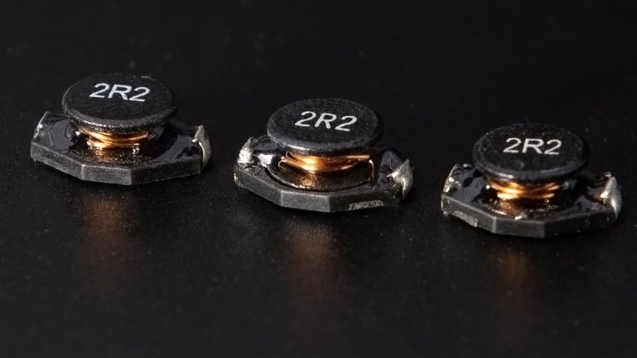

电感：三个电流参数决定生死
电容看电压，电感看电流。一颗电感的规格书里，真正决定能不能用的不是「感值」，而是饱和电流 Isat、温升电流 Irms、直流电阻 DCR。选错这三个，DCDC 会在满载瞬间「掉压」甚至烧毁。


读完这一章，你应该能
- 区分 Isat 与 Irms，说清各自对应的失效模式
- 用 ΔI = Vout(Vin−Vout)/(L·fs·Vin) 算出纹波电流，并选感值
- 解释 DCR 如何变成铜损，以及为什么屏蔽电感更贵
2.3.1三个电流参数
| 参数 | 含义 | 超了会怎样 | 选型余量 |
|---|---|---|---|
| Isat | 感值跌到标称 70–80%（或 90%）时的电流 | 感值骤降、纹波暴涨、DCDC 失控过流 | 峰值电流 ≤ 0.7×Isat |
| Irms（Iheat） | 温升到规定值（常 40°C）的等效电流 | 持续过热、绝缘老化、焊点疲劳 | 有效值 ≤ 0.8×Irms |
| DCR | 绕线直流电阻 | 铜损 P=I²·DCR，效率下降、发热 | 按效率目标反算 |
MINI 板第 4 页的两片 DCJ5060T-6（U6、U9）各配一颗 4.7µH（L1、L2）；核心板的 2.2µH（L2）服务 1.35V 大电流轨。同样是「几 µH」，差别在电流能力：1.35V 轨的输出电流远大于 5V 小轨，所以感值更小、饱和电流更大。
电感选型计算器输入工况，算纹波、峰值与最小感值
Vin 12 V
Vout 5 V
Iout 1 A
L 4.7 µH
2.3.2DCR 与屏蔽：看不见的两个成本项
DCR 直接变成铜损：1A 通过 50mΩ 就是 50mW，看似不多，但在 1.35V/2A 的轨上就明显了。选型经验：大电流轨优先低 DCR（<20mΩ），小电流轨可放宽。
屏蔽电感（带金属壳）比开放式贵，但漏磁小。在 SoC 旁边、DDR 旁边、晶振旁边，漏磁会耦合进高阻节点（VREF、晶振、ADC），表现为「电源一加载，采样就抖」。这就是为什么核心板靠近 DDR 的那颗用的是屏蔽型。
三个常见错误
1. 只按 Iout 选 Isat。峰值是 Iout+ΔI/2，且启动/负载跳变时还有过冲，余量要按峰值算。
2. 两颗电感靠太近同向。互感让有效感值变化，纹波与环路都变。
3. 用电感的「额定电流」当饱和电流。很多厂商标的是 Irms，饱和点可能只有它的 1.3 倍。
自测
Vin=5V、Vout=1.35V、Iout=2A、fs=1MHz、L=2.2µH，峰值电流约多少？
ΔI = 1.35×(5−1.35)/(2.2µ×1M×5) ≈ 0.45A，峰值 ≈ 2.22A。所以 Isat 至少要 3A 以上才安全。
为什么 Isat 通常标在「感值下降 30%」而不是「完全饱和」？
因为工程上以感值明显下降为失效判据：此时纹波已大幅超出设计值，环路可能失稳。标 30% 下降点比标「彻底饱和」更接近实际可用边界。
屏蔽电感解决的是什么问题？
漏磁耦合。开放式电感的磁力线外泄，会干扰邻近的晶振、VREF、ADC 等高阻/高灵敏节点，表现为噪声与漂移。